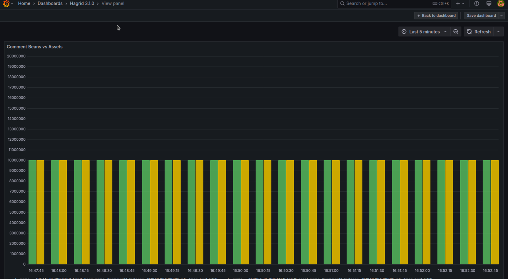
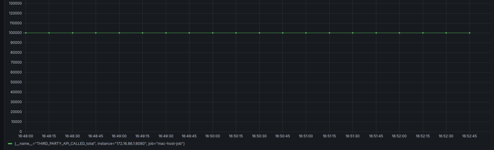
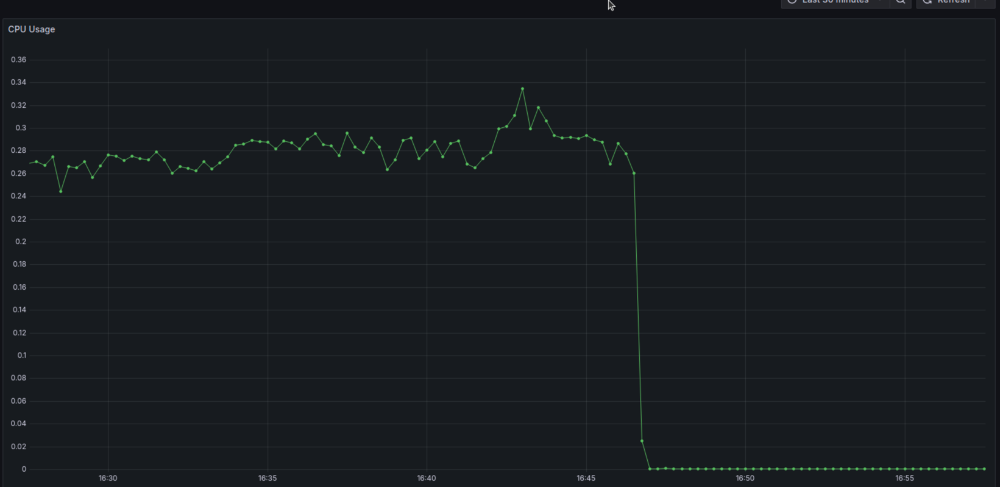
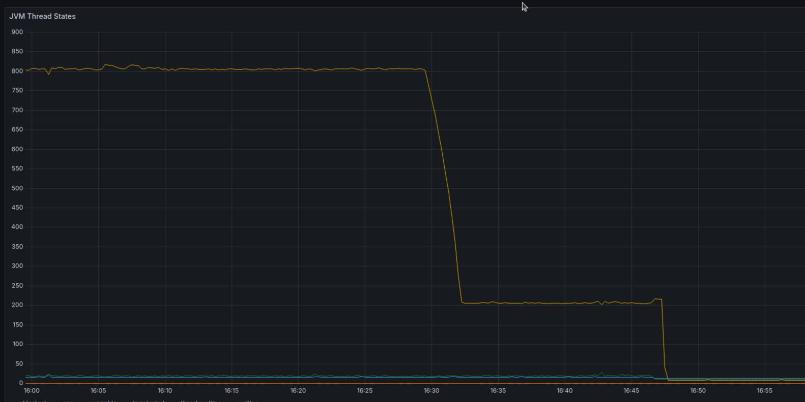

Version [3.1.0] - [6th April 2024]
Added
Below are the features has been added to this version
Introduction of Analytics Service
For more information about analytics service, please refer to Analytics Feature
Injection of syncServiceContainers
From version 3.1.0, steps, beans and assets would have one extra method configure inherited from parent
public void configure(SyncServiceContainer syncServiceContainer){
AnalyticsFactory analyticsFactory = syncServiceContainer.getBean(AnalyticsFactory.class);
Namespace namespace = syncServiceContainer.getBean(Namespace.class);
analyticsService = analyticsFactory.getAnalyticsService(namespace.getNamespace());
}
This method, enables the injection of syncServiceContainer is all steps, beans and assets.
Using syncServiceContainer, developer can obtain any service which is specific to this sync. You can think of syncServiceContainer
like spring container but just for this specific run.
Using syncServiceContainer, devs can get AnalyticsFactory class and Namespace class which contains the namespace of the current sync ( that dev )
that can be used to get the instance of analyticsService
Performance Testing Results
Number of assets payloads generated
Minimal lag to no lag between traverserService and processorService when processing 10M payloads
Green color shows beans generated and yellow color shows assets generated

Number Third party APIs called
Hagrid has called more than 100K APIs

CPU usage
On an average 30% of the CPU is used, which translated to 3 CPU core as my mac has 9 CPUs.

JVM Thread
Most of the threads are either in waiting state or runnable state.
